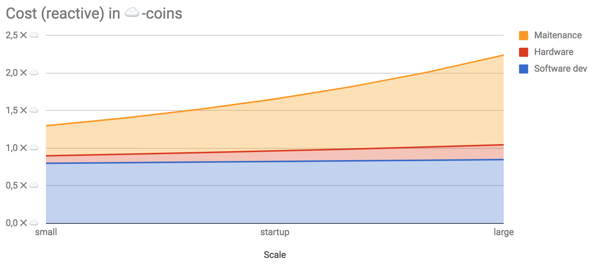
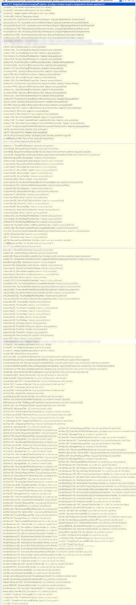

Reactive programming
Lessons learned
Tomasz Nurkiewicz
You must be this tall to practice reactive programming
[...] a very particular set of skills, skills [...] acquired over a very long career. Skills that make me a nightmare for
people like you
other developers
Liam Neeson on reactive programming
Who am I?
I built complex reactive systems
* not really proud about the complex
part
1000+ Akka cluster nodes
Tens of thousands of RPS
on a single node
Beat C10k problem
...and C100k
I wrote a book with the word reactive
in the title

(2016)

May you live in interesting times
Chinese curse
May you support interesting codebase
me
- Fetch user by name from a web service
- If not yet in database, store it
- Load shopping cart for user
- Count total price of items
- Make single payment
- Send e-mail for each individual item, together with payment ID
User user = ws.findUserByName(name);
if (!db.contains(user.getSsn())) {
db.save(user);
}
List<Item> cart = loadCart(user);
double total = cart.stream()
.mapToDouble(Item::getPrice)
.sum();
UUID id = pay(total);
cart.forEach(item -> sendEmail(item, id));
User user = ws.findUserByName(name)
Mono<User> user = ws.findUserByName(name)
boolean contains = db.contains(user.getSsn())
Mono<Boolean> contains = db.contains(user.getSsn())
if (!db.contains(user.getSsn())) {
db.save(user);
}
user -> db
.contains(user.getSsn()) //Mono<Bool>, true/false
.filter(contains -> contains) //Mono<Bool>, true/empty
.switchIfEmpty(db.save(user)) //if empty,
//replace with db.save()
User user = ws.findUserByName(name);
if (!db.contains(user.getSsn())) {
db.save(user);
}
List<Item> cart = loadCart(user);
double total = cart.stream()
.mapToDouble(Item::getPrice)
.sum();
UUID id = pay(total);
cart.forEach(item -> sendEmail(item, id));
ws
.findUserByName(name)
.flatMap(user -> db
.contains(user.getSsn())
.filter(contains -> contains)
.switchIfEmpty(db.save(user))
)
.flatMap(user -> loadCart(user)
.collectList()
.flatMap(cart -> {
double total = cart.stream()
.mapToDouble(Item::getPrice)
.sum();
return pay(total)
.map(uuid -> Pair.of(cart, uuid));
}))
.flatMapMany(pair -> Flux
.fromIterable(pair.getLeft())
.map(item -> Pair.of(item, pair.getRight())))
.flatMap(pair -> sendEmail(pair.getLeft(), pair.getRight()))
That escalated quickly
User user = ws.findUserByName(name);
if (!db.contains(user.getSsn())) {
db.save(user);
}
List<Item> cart = loadCart(user);
double total = cart.stream()
.mapToDouble(Item::getPrice)
.sum();
UUID id = pay(total);
cart.forEach(item -> sendEmail(item, id));
ws
.findUserByName(name)
.flatMap(user -> db
.contains(user.getSsn())
.filter(contains -> contains)
.switchIfEmpty(db.save(user))
)
.flatMap(user -> loadCart(user)
.collectList()
.flatMap(cart -> {
double total = cart.stream()
.mapToDouble(Item::getPrice)
.sum();
return pay(total)
.map(uuid -> Pair.of(cart, uuid));
}))
.flatMapMany(pair -> Flux
.fromIterable(pair.getLeft())
.map(item -> Pair.of(item, pair.getRight())))
.flatMap(pair -> sendEmail(pair.getLeft(), pair.getRight()))
Ubiquitous language?
Are Semigroup, Monoid, Monad, Functor, Kleisli, and Yoneda pervasive in your domain model?www.innoq.com/en/blog/the-language-of-maths-is-not-the-language-of-your-business/
Unless your core domain is mathematics, category theory is not the language used by your domain experts.www.innoq.com/en/blog/the-language-of-maths-is-not-the-language-of-your-business/
Good luck getting your domain experts to understand the language introduced by that abstraction.www.innoq.com/en/blog/the-language-of-maths-is-not-the-language-of-your-business/
AreMonoandFluxpervasive in your domain model?
Unless your core domain is infectious diseases, Reactor is not the language used by your domain experts.
en.wikipedia.org/wiki/Infectious_mononucleosis
en.wikipedia.org/wiki/Dysentery
Universal measure of code quality?
Simple
?
Monad transformers are reducing boilerplate
Tested?
Remember that code with badly written tests can be more harmful than code without tests.
hackernoon.com/few-simple-rules-for-good-coding-my-15-years-experience-96cb29d4acd9
- open/closed
- SOLID
- high cohesion
- low coupling
- cyclomatic complexity
- DRY
- ...
Boring
Implementation transparency
I don't care about patterns, frameworks, syntax
10x developer?
Enable 10 other developers

What are you optimizing?
Costs
- Software development
- Hardware
- Maintenance
Blocking code

Reactive code
Tipping point?

The  point
point

Are you ?
No.
Little's law
L =  W
W
en.wikipedia.org/wiki/Little's_law
Tomcat, 100 threads (L), 100 ms/request (W)
1K request/second (λ)
on a laptop
 confirmed!
confirmed!
Ever heard of space-time trade off?
What about human-hardware trade off?
Let's talk about maintenance
I miss you, stack trace...
|  |
java.sql.SQLTransientConnectionException: HikariPool-1 -
Connection is not available,
request timed out after 30003ms.
at com.zaxxer.hikari.pool.HikariPool.createTimeoutException(HikariPool.java:555) ~[HikariCP-2.4.7.jar:na]
at com.zaxxer.hikari.pool.HikariPool.getConnection(HikariPool.java:188) ~[HikariCP-2.4.7.jar:na]
at com.zaxxer.hikari.pool.HikariPool.getConnection(HikariPool.java:147) ~[HikariCP-2.4.7.jar:na]
at com.zaxxer.hikari.HikariDataSource.getConnection(HikariDataSource.java:99) ~[HikariCP-2.4.7.jar:na]
at org.springframework.jdbc.datasource.DataSourceTransactionManager.doBegin(DataSourceTransactionManager.java:211) ~[spring-jdbc-4.3.4.RELEASE.jar:4.3.4.RELEASE]
at org.springframework.transaction.support.AbstractPlatformTransactionManager.getTransaction(AbstractPlatformTransactionManager.java:373) ~[spring-tx-4.3.4.RELEASE.jar:4.3.4.RELEASE]
at org.springframework.transaction.interceptor.TransactionAspectSupport.createTransactionIfNecessary(TransactionAspectSupport.java:447) ~[spring-tx-4.3.4.RELEASE.jar:4.3.4.RELEASE]
at org.springframework.transaction.interceptor.TransactionAspectSupport.invokeWithinTransaction(TransactionAspectSupport.java:277) ~[spring-tx-4.3.4.RELEASE.jar:4.3.4.RELEASE]
at org.springframework.transaction.interceptor.TransactionInterceptor.invoke(TransactionInterceptor.java:96) ~[spring-tx-4.3.4.RELEASE.jar:4.3.4.RELEASE]
"http-nio-9099-exec-2@6415" daemon prio=5 tid=0x28 nid=NA waiting
java.lang.Thread.State: WAITING
[...4 frames omitted...]
at org.apache.activemq.transport.FutureResponse.getResult
at o.a.a.transport.ResponseCorrelator.request
at o.a.a.ActiveMQConnection.syncSendPacket
at o.a.a.ActiveMQConnection.syncSendPacket
at o.a.a.ActiveMQSession.syncSendPacket
at o.a.a.ActiveMQMessageProducer.<init>
at o.a.a.ActiveMQSession.createProducer
[...5 frames omitted...]
at org.springframework.jms.core.JmsTemplate.send
at com.nurkiewicz.Sample$sendMessageAfterCommit$1.afterCommit
at org.springframework.transaction.support.TransactionSynchronizationUtils.invokeAfterCommit
at o.s.t.s.TransactionSynchronizationUtils.triggerAfterCommit
at o.s.t.s.AbstractPlatformTransactionManager.triggerAfterCommit
at o.s.t.s.AbstractPlatformTransactionManager.processCommit
at o.s.t.s.AbstractPlatformTransactionManager.commit
[...73 frames omitted...]
stack trace is meaningless when trying to follow a request.
medium.com/netflix-techblog/zuul-2-the-netflix-journey-to-asynchronous-non-blocking-systems-45947377fb5c
It is difficult to follow a request as events and callbacks are processed [...]
medium.com/netflix-techblog/zuul-2-the-netflix-journey-to-asynchronous-non-blocking-systems-45947377fb5c
[...] unhandled exceptions, and incorrectly handled state changes [...]
These types of issues have proven to be quite difficult to debug
medium.com/netflix-techblog/zuul-2-the-netflix-journey-to-asynchronous-non-blocking-systems-45947377fb5c
IntelliJ IDEA

What’s New in IntelliJ IDEA 2019.3 EAP6
Hooks.onOperatorDebug()
Exceptions from hell
flux
.map(this::foo)
.map(this::bar)
.map(this::buzz)
java.lang.NullPointerException:
The mapper function returned a null value.
at io.reactivex.internal.functions.ObjectHelper.requireNonNull(ObjectHelper.java:39)
at io.reactivex.internal.operators.flowable.FlowableMap$MapSubscriber.onNext(FlowableMap.java:64)
at io.reactivex.internal.subscriptions.ScalarSubscription.request(ScalarSubscription.java:55)
at io.reactivex.internal.subscribers.BasicFuseableSubscriber.request(BasicFuseableSubscriber.java:153)
at io.reactivex.internal.subscribers.BasicFuseableSubscriber.request(BasicFuseableSubscriber.java:153)
at io.reactivex.internal.subscribers.BasicFuseableSubscriber.request(BasicFuseableSubscriber.java:153)
at io.reactivex.internal.subscribers.LambdaSubscriber.request(LambdaSubscriber.java:111)
at io.reactivex.internal.operators.flowable.FlowableInternalHelper$RequestMax.accept(FlowableInternalHelper.java:219)
at io.reactivex.internal.operators.flowable.FlowableInternalHelper$RequestMax.accept(FlowableInternalHelper.java:215)
at io.reactivex.internal.subscribers.LambdaSubscriber.onSubscribe(LambdaSubscriber.java:49)
at io.reactivex.internal.subscribers.BasicFuseableSubscriber.onSubscribe(BasicFuseableSubscriber.java:67)
at io.reactivex.internal.subscribers.BasicFuseableSubscriber.onSubscribe(BasicFuseableSubscriber.java:67)
at io.reactivex.internal.subscribers.BasicFuseableSubscriber.onSubscribe(BasicFuseableSubscriber.java:67)
at io.reactivex.internal.operators.flowable.FlowableJust.subscribeActual(FlowableJust.java:34)
at io.reactivex.Flowable.subscribe(Flowable.java:12986)
at io.reactivex.internal.operators.flowable.FlowableMap.subscribeActual(FlowableMap.java:38)
at io.reactivex.Flowable.subscribe(Flowable.java:12986)
at io.reactivex.internal.operators.flowable.FlowableMap.subscribeActual(FlowableMap.java:38)
at io.reactivex.Flowable.subscribe(Flowable.java:12986)
at io.reactivex.internal.operators.flowable.FlowableMap.subscribeActual(FlowableMap.java:38)
at io.reactivex.Flowable.subscribe(Flowable.java:12986)
at io.reactivex.Flowable.subscribe(Flowable.java:12922)
at io.reactivex.Flowable.subscribe(Flowable.java:12843)
java.lang.NullPointerException:
The mapper returned a null value.
at java.util.Objects.requireNonNull(Objects.java:228)
at reactor.core.publisher.FluxMapFuseable$MapFuseableSubscriber.onNext(FluxMapFuseable.java:107)
at reactor.core.publisher.FluxJust$WeakScalarSubscription.request(FluxJust.java:91)
at reactor.core.publisher.FluxMapFuseable$MapFuseableSubscriber.request(FluxMapFuseable.java:156)
at reactor.core.publisher.FluxMapFuseable$MapFuseableSubscriber.request(FluxMapFuseable.java:156)
at reactor.core.publisher.FluxMapFuseable$MapFuseableSubscriber.request(FluxMapFuseable.java:156)
at reactor.core.publisher.LambdaSubscriber.onSubscribe(LambdaSubscriber.java:89)
at reactor.core.publisher.FluxMapFuseable$MapFuseableSubscriber.onSubscribe(FluxMapFuseable.java:90)
at reactor.core.publisher.FluxMapFuseable$MapFuseableSubscriber.onSubscribe(FluxMapFuseable.java:90)
at reactor.core.publisher.FluxMapFuseable$MapFuseableSubscriber.onSubscribe(FluxMapFuseable.java:90)
at reactor.core.publisher.FluxJust.subscribe(FluxJust.java:68)
at reactor.core.publisher.FluxMapFuseable.subscribe(FluxMapFuseable.java:63)
at reactor.core.publisher.FluxMapFuseable.subscribe(FluxMapFuseable.java:63)
at reactor.core.publisher.FluxMapFuseable.subscribe(FluxMapFuseable.java:63)
at reactor.core.publisher.Flux.subscribe(Flux.java:6571)
at reactor.core.publisher.Flux.subscribeWith(Flux.java:6738)
at reactor.core.publisher.Flux.subscribe(Flux.java:6564)
at reactor.core.publisher.Flux.subscribe(Flux.java:6528)
at reactor.core.publisher.Flux.subscribe(Flux.java:6498)
TimeoutException
play.api.http.HttpErrorHandlerExceptions$$anon$1:
Execution exception[[AskTimeoutException:
Ask timed out on
[Actor[akka://application/user/$a#-948062154]]
after [60000 ms]]]
at play.api.http.HttpErrorHandlerExceptions$.throwableToUsefulException(HttpErrorHandler.scala:265) ~[play_2.11-2.4.3.jar:2.4.3]
at play.api.http.DefaultHttpErrorHandler.onServerError(HttpErrorHandler.scala:191) ~[play_2.11-2.4.3.jar:2.4.3]
at play.api.GlobalSettings$class.onError(GlobalSettings.scala:179) [play_2.11-2.4.3.jar:2.4.3]
at play.api.DefaultGlobal$.onError(GlobalSettings.scala:212) [play_2.11-2.4.3.jar:2.4.3]
at play.api.http.GlobalSettingsHttpErrorHandler.onServerError(HttpErrorHandler.scala:94) [play_2.11-2.4.3.jar:2.4.3]
at play.core.server.netty.PlayDefaultUpstreamHandler$$anonfun$9$$anonfun$apply$1.applyOrElse(PlayDefaultUpstreamHandler.scala:158) [play-netty-server_2.11-2.4.3.jar:2.4.3]
at play.core.server.netty.PlayDefaultUpstreamHandler$$anonfun$9$$anonfun$apply$1.applyOrElse(PlayDefaultUpstreamHandler.scala:155) [play-netty-server_2.11-2.4.3.jar:2.4.3]
at scala.runtime.AbstractPartialFunction.apply(AbstractPartialFunction.scala:36) [scala-library-2.11.7.jar:na]
at scala.util.Failure$$anonfun$recover$1.apply(Try.scala:216) [scala-library-2.11.7.jar:na]
at scala.util.Try$.apply(Try.scala:192) [scala-library-2.11.7.jar:na]
at scala.util.Failure.recover(Try.scala:216) [scala-library-2.11.7.jar:na]
at scala.concurrent.Future$$anonfun$recover$1.apply(Future.scala:324) [scala-library-2.11.7.jar:na]
at scala.concurrent.Future$$anonfun$recover$1.apply(Future.scala:324) [scala-library-2.11.7.jar:na]
at scala.concurrent.impl.CallbackRunnable.run(Promise.scala:32) [scala-library-2.11.7.jar:na]
at play.api.libs.iteratee.Execution$trampoline$.executeScheduled(Execution.scala:109) [play-iteratees_2.11-2.4.3.jar:2.4.3]
at play.api.libs.iteratee.Execution$trampoline$.execute(Execution.scala:71) [play-iteratees_2.11-2.4.3.jar:2.4.3]
at scala.concurrent.impl.CallbackRunnable.executeWithValue(Promise.scala:40) [scala-library-2.11.7.jar:na]
at scala.concurrent.impl.Promise$DefaultPromise.tryComplete(Promise.scala:248) [scala-library-2.11.7.jar:na]
at scala.concurrent.Promise$class.complete(Promise.scala:55) [scala-library-2.11.7.jar:na]
at scala.concurrent.impl.Promise$DefaultPromise.complete(Promise.scala:153) [scala-library-2.11.7.jar:na]
at scala.concurrent.Future$$anonfun$map$1.apply(Future.scala:235) [scala-library-2.11.7.jar:na]
at scala.concurrent.Future$$anonfun$map$1.apply(Future.scala:235) [scala-library-2.11.7.jar:na]
at scala.concurrent.impl.CallbackRunnable.run(Promise.scala:32) [scala-library-2.11.7.jar:na]
at play.core.j.HttpExecutionContext$$anon$2.run(HttpExecutionContext.scala:40) [play_2.11-2.4.3.jar:2.4.3]
at akka.dispatch.TaskInvocation.run(AbstractDispatcher.scala:40) [akka-actor_2.11-2.3.13.jar:na]
at akka.dispatch.ForkJoinExecutorConfigurator$AkkaForkJoinTask.exec(AbstractDispatcher.scala:397) [akka-actor_2.11-2.3.13.jar:na]
at scala.concurrent.forkjoin.ForkJoinTask.doExec(ForkJoinTask.java:260) [scala-library-2.11.7.jar:na]
at scala.concurrent.forkjoin.ForkJoinPool$WorkQueue.runTask(ForkJoinPool.java:1339) [scala-library-2.11.7.jar:na]
at scala.concurrent.forkjoin.ForkJoinPool.runWorker(ForkJoinPool.java:1979) [scala-library-2.11.7.jar:na]
at scala.concurrent.forkjoin.ForkJoinWorkerThread.run(ForkJoinWorkerThread.java:107) [scala-library-2.11.7.jar:na]
Caused by: akka.pattern.AskTimeoutException: Ask timed out on [Actor[akka://application/user/$a#-948062154]] after [60000 ms]
at akka.pattern.PromiseActorRef$$anonfun$1.apply$mcV$sp(AskSupport.scala:334) ~[akka-actor_2.11-2.3.13.jar:na]
at akka.actor.Scheduler$$anon$7.run(Scheduler.scala:117) ~[akka-actor_2.11-2.3.13.jar:na]
at scala.concurrent.Future$InternalCallbackExecutor$.unbatchedExecute(Future.scala:599) ~[scala-library-2.11.7.jar:na]
at scala.concurrent.BatchingExecutor$class.execute(BatchingExecutor.scala:109) ~[scala-library-2.11.7.jar:na]
at scala.concurrent.Future$InternalCallbackExecutor$.execute(Future.scala:597) ~[scala-library-2.11.7.jar:na]
at akka.actor.LightArrayRevolverScheduler$TaskHolder.executeTask(Scheduler.scala:467) ~[akka-actor_2.11-2.3.13.jar:na]
at akka.actor.LightArrayRevolverScheduler$$anon$8.executeBucket$1(Scheduler.scala:419) ~[akka-actor_2.11-2.3.13.jar:na]
at akka.actor.LightArrayRevolverScheduler$$anon$8.nextTick(Scheduler.scala:423) ~[akka-actor_2.11-2.3.13.jar:na]
at akka.actor.LightArrayRevolverScheduler$$anon$8.run(Scheduler.scala:375) ~[akka-actor_2.11-2.3.13.jar:na]
at java.lang.Thread.run(Thread.java:745) ~[na:1.8.0_31]

The best reactive system is single-threaded (!)
- Reactor pattern
- Actors
- SPSC queues
- Rx/Reactor operators
Order is no longer guaranteed
parallel() vsflatMap() vsconcatMap() vsconcatMapEager()
DDoS was never that simple!
flatMap(..., 128)
Monitoring
Staged event-driven architecture
an approach to software architecture that decomposes a complex, event-driven application into a set of stages connected by queuesen.wikipedia.org/wiki/Staged_event-driven_architecture
Watch out for your queues
Why no mailboxSize in Akka 2?
slow, inaccurate, impossible, silly
letitcrash.com/post/17707262394/why-no-mailboxsize-in-akka-2Lightbend Telemetry 💰
- Mailbox size (counter)
- statistics for actor mailbox sizes
Timing things
Timers are a bit counterintuitive to get right
import io.micrometer.core.instrument.Timer;
var timer = Metrics.timer("timer");
//...
User user = timer.recordCallable(this::loadUser);
Mono<User> user = timer.recordCallable(this::loadUserAsync);
Mono<User> Mono
.fromCallable(System::currentTimeMillis)
.flatMap(start ->
loadUserAsync()
.doOnSuccess(response ->
timer.record(
currentTimeMillis() - start, MILLISECONDS))
);
}
loadUserAsync()
.tag("operation", "loadUser")
.metrics()
Key Takeaways
Syntax is not ready
Spring Boot 2 changes everything
@GetMapping("/users/{id}")
ResponseEntity<User> get(@PathVariable long id) {
User user = repository.findById(id);
if(user != null) {
return ok(user);
} else {
return notFound();
}
}
@GetMapping("/users/{id}")
ResponseEntity<User> get(@PathVariable long id) {
return repository
.findById(id)
.map(user -> ok(user))
.orElse(notFound());
}
@Bean
RouterFunction<ServerResponse> route() {
return route(
GET("/users/{id}"), request -> Mono
.justOrEmpty(request.pathVariable("id"))
.map(Long::parseLong)
.flatMap(id -> repository.findById(id)
.flatMap(p -> ok().body(fromObject(p))
.switchIfEmpty(notFound().build()))
);
}
Reactive programming is awesome
Seriously
the explosion of latency-inducing microserviceswww.infoq.com/articles/Designing-Implementing-Using-Reactive-APIs
Are you really benefitting?
Need or desire?
Make a conscious decision
Thank you!

@tnurkiewicz
nurkiewicz.github.io/talks/2018/reactive-lessons
Image sources
- http://disney.wikia.com/wiki/Statler_and_Waldorf
- https://twitter.com/nixcraft/status/974645853976776704
- www.pngmart.com/image/46149
- http://half-life.wikia.com/wiki/File:HL3_logo.svg
- http://dilbert.com/strip/2008-09-03
- https://www.3djuegos.com/comunidad-foros/tema/45105428/0/nintendo-switch-publica-sus-especificaciones-tecnicas-al-completo/
{kind=link}